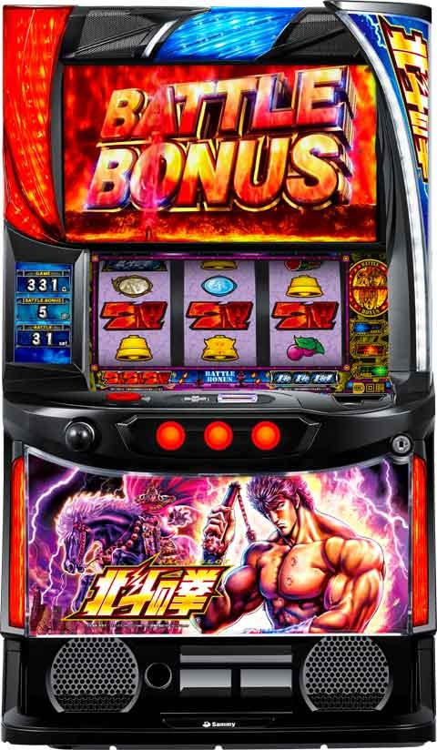

L北斗の拳 スロ塾流無想転生打法

北斗の拳 無想転生打法(超優遇狙い)
ケンシロウ覚醒モードや無想転生打法がオカルトだと思う人は推奨しない打ち方です。
巷で話題のケンシロウ覚醒モードや無想転生打法などは、ほとんど以下の狙い目に該当するものと思われます。
100万G以上の大量実践データからも、より優遇される傾向が見られます。
【条件】
下記の条件を満たすとATの継続率が上がると思われる。初当たり確率に関してはいつもの優遇状態と似た感じ？
① 直近1300Gで差枚-1000枚よりマイナス
②単発後(820G以上ハマり後かつ天井未到達)
③更にこの条件で次回ATが200G未満かつ単発の場合は、より優遇状態になる。
【具体例】
AT単発は40G、2連は80GでG数計算する。
【無想転生打法その①】
①、②の具体例
前々回、前回(820G以上ハマりかつ単発)
前々回 300G 2連
前回 1000G 単発
※直近1300Gが差枚-1000枚の条件を満たすため、前々回が300G以上で2連以内が望ましい。
【無想転生打法その②】
①、②、③の具体例
前々回、前回(200G以内当選かつ単発)
前々回 1050G 単発
前回 150G単発
※前々回+前回の当選G数を足して1200G以上。前々回が2連以内なら直近1300G以内で差枚-1000枚の条件を満たせる。
※前々回の履歴は天井到達でも問題無し。天井未到達の方が条件良さそうだが大量データ無いため不明。
【狙い目】
非等価で現金投資の可能性ある場合、積極派の狙い目は推奨しない。
①、②の場合
積極派 200Gから(自己責任)
慎重派 400Gから
①、②、③の場合
積極派 0G(自己責任) or 200Gから
慎重派 300Gから
【まとめ】
大量実践データからも単発後は優遇が強い傾向、打感やデータを200例前後見た感じから継続率も初当たり確率も優遇される傾向でした。
ただ、今回の狙い目は特殊な狙い方になるため、不安な方は打たなくても良いと思います。
天井短縮無く青天井に近い台を打つ事になるため展開がかなり荒れます。
更に非等価現金投資になるケースではボーダー上げた方が良さそうです。
直近単発だと優遇具合が上がると思われるので普段の優遇状態からの天井狙い時は、直近単発の有無を見ておくと精度の高い優遇状態が打てそうです。
これは打感ですが、直近ATが5連以上だと優遇の恩恵が弱く、単発後だと優遇の恩恵が強い印象です。
実際の期待値や機械割はヲ猿さんのnoteや狐チャンネルの期待値表から、ある程度確認出来ます。